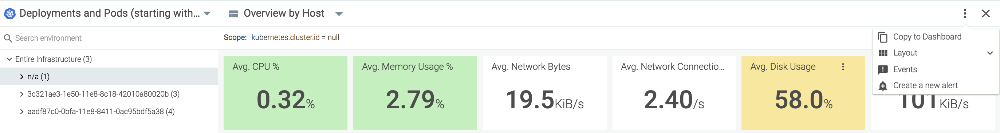
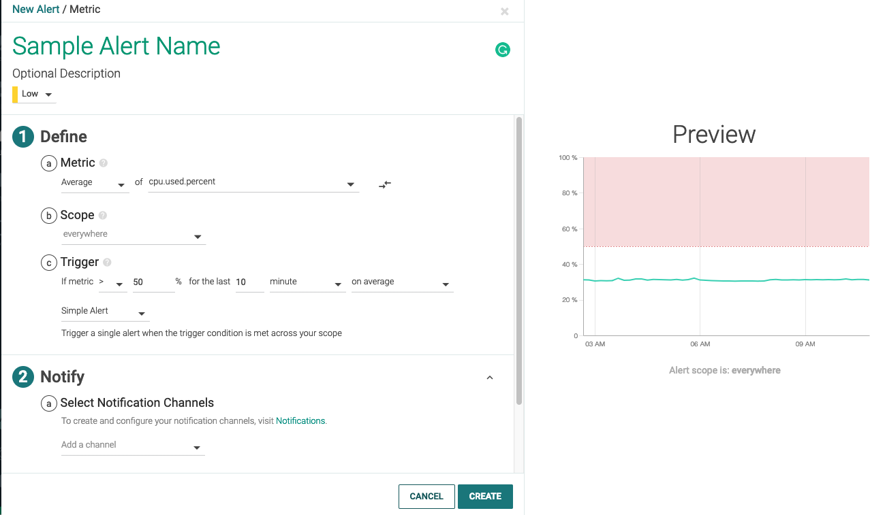
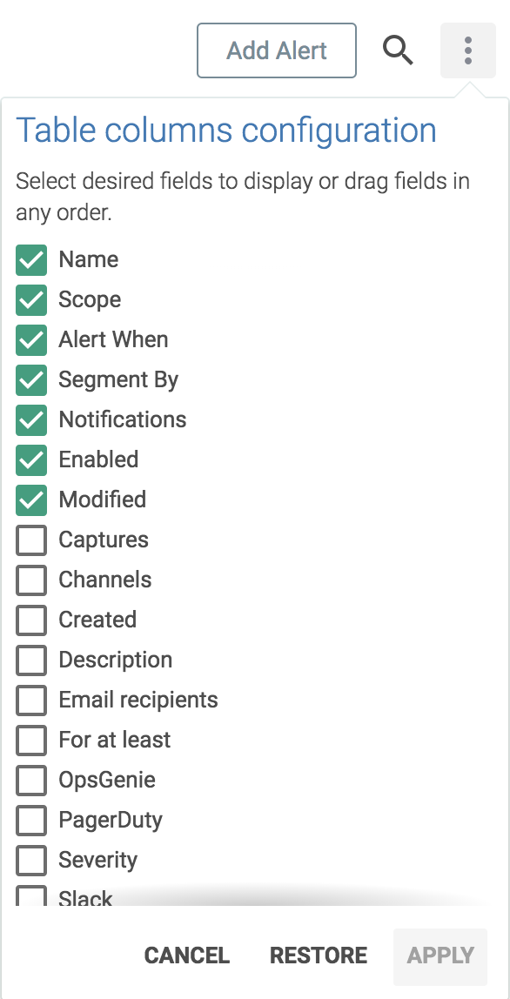
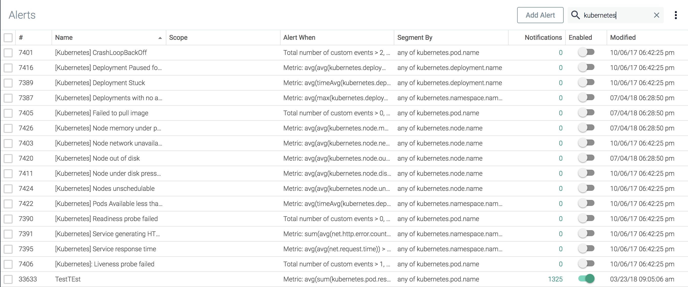
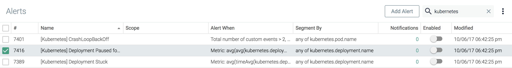

Alerts
Alerts notify users when an event/issue occurs that requires their attention. The Alerts module displays a list of all existing alerts and a wizard for creating/editing alerts as needed.
To create alerts, simply:
Configure the notification channels you want to use for alert notification.
Choose an Alert Type.
Note
Sysdig sometimes deprecates outdated metrics. Alerts that use these metrics will not be modified or disabled, but will no longer be updated.
See also: Heuristic and Deprecated Metrics.
Contents
Alert Types
There are currently five types of alerts available in Sysdig Monitor:
Alert Type | Description | ||
|---|---|---|---|
Downtime | Monitor any type of entity (e.g. host, container, process, service, etc), and alert when the entity goes down. |
| |
Metric | Monitor time-series metrics, and alert if they violate user-defined thresholds. |
| |
Event | Monitor occurrences of specific events, and alert if the total number of occurrences violates a threshold. Useful for alerting on container, orchestration, and service events like restarts and deployments. |
| |
Anomaly Detection | Monitor hosts based on their historical behaviors, and alert when they deviate. |
| |
Group Outlier | Monitor a group of hosts and be notified when one acts differently from the rest. |
|


Configure Alerts
Use the Alert wizard to create or edit alerts.
Open the Alert Wizard
There are multiple ways to access the Alert wizard:
From the Explore Table
Select the
Alert (bell)icon beside an entity:
Click the
More Options (three dots)icon for the table, and selectCreate a New Alert:
From Dashboards Panel
Click the
More Options (three dots)icon for a panel, and selectCreate Alert:
From Alerts Module
Click the
Add Alertbutton:
Select an existing alert (click directly or select the checkbox beside the alert) and click the
Editbutton:
Create an Alert
Tip
Configure notification channels before you begin, so the channels are available to assign to the alert. Optionally, you can add custom subject and body information into individual alert notifications.
Enter Basic Alert Information
To configure an alert, Open the Alert Wizard and set the following parameters:
(Setup):
Type:Select the desired Alert Type.

Each type has different parameters, but they follow the same pattern:
NameDescription(optional)Priority: High, Medium, Low,andInfoare reflected in theEventslist, where you can sort by the severity of the Event/Alert.Parameters in
Define,Notify, andActsections

(1) Define:
Entity:What the alert should look forScope: Everywhere, or a more limited scopeTrigger: Boundaries for triggering the event, and whether to send aSingle alertMultiple alertsInclude the necessary conditions. (Also connected to Notify timing.)
(2) Notify
Notification Channel:Select from the configured notification channels in the list.Notification Options:Set the time interval at which multiple alerts should be sent.Format Message:If applicable, add message format details.
(3) Act
(Optional): Configure a Sysdig capture. See also Captures.
Sysdig capture files are not available for
Event Alerts.
Click
CreateorSave.
Note
You can also create alerts via the Sysdig API.
Optional: Customize Notifications
You can optionally customize individual notifications to provide context for the errors that triggered the alert. All the notification channels support this added contextual information and customization flexibility.
Modify the subject, body, or both of the alert notification with the following:
Plaintext: A custom message stating the problem. For example, Stalled Deployment.
Hyperlink: For example, URL to a Dashboard.
Dynamic Variable: For example, a hostname. Note the conventions:
All variables that you insert must be enclosed in double curly braces, such as
{{file_mount}}.Variables are case sensitive.
The variables should correspond to the segment values you created the alert for. For example, if an alert is segmented by
host.hostNameandcontainer.name, the corresponding variables will be{{host.hostName}}and{{container.name}}respectively, and no other segment variables are allowed in the notification subject and body.Notification subjects will not show up on the Event feed.
Using a variable that is not a part of the segment will trigger an error.
The segment variables used in an alert are turned to the current system values upon sending the alert.
 |
You can send a customized alert notification to the following channels:
Email
Slack
Amazon SNS Topic
Opsgenie
Pagerduty
VictorOps
Webhook
Manage Alerts
Alerts can be managed individually, or as a group, by using the checkboxes on the left side of the module interface, and the customization bar at the bottom of the interface. The columns of the table can also be configured, to provide users with the necessary data for their use cases.
Enable/Disable Alerts
Alerts can be enabled or disabled using the customization bar:
From the Alerts module, check the boxes beside the relevant alert/s.
Click the
Enablebutton or theDisablebutton as necessary.Note
The
Enable/Disablebuttons are only visible if a relevant alert is selected. For example, in the first image below, only theDisablebutton is visible, as the alert selected is currently enabled:
In the image below, both buttons are visible, as an enabled alert and a disabled alert are visible:

Configure the Alerts Table Columns
To configure the visible columns:
From the Alerts module, click the
Table Columns Configuration(three dots) icon. Check the boxes beside each desired column.
Click the
Applybutton to save the changes, theRestorebutton to return the table to the original configuration, or theCancelbutton to revert to the previous configuration.
Search for an Alert
The Alerts table can be searched using partial or full strings. For example, the search below displays only events that contain kubernetes:
|  |
Edit an Existing Alert
To edit an existing alert:
Click the checkbox beside the alert:
 Click the
Editbutton on the customization bar:
Edit the alert, and click the
Savebutton to confirm the changes.
Copy an Alert
Alerts can be copied within the current team to allow for similar alerts to be created quickly, or copied to a different team to share alerts.
Copy an Alert to the Same Team
To copy an alert within the current team:
Click the checkbox beside the alert to be copied.
Click the
Copybutton on the customization bar:
Check that the
Current Teamoption is selected.Rename the alert, and click the
Copy and Openbutton to save the changes.
Copy an Alert to a Different Team
To copy an alert within the current team:
Click the checkbox beside the alert to be copied.
Click the
Copybutton on the customization bar:Select the
Other Team(s)option.Open the
Select Teamdrop-down menu, and click the checkbox beside the team/s that the alert should be copied to:
Rename the alert, and click the
Send Copybutton to save the changes.
Export Alert JSON
A JSON file can be exported to a local machine, containing JSON snippets for each selected alert:
Click the checkbox/es beside the relevant alert/s to be exported.
Click the
Export JSONbutton on the customization bar:
Delete Alerts
To delete one or more alerts:
Click the checkbox/es beside the relevant alert/s to be deleted.
Click the
Deletebutton on the customization bar:
Click the
Yes, Delete Alert/sbutton to confirm the changes.
Advanced Alert Thresholds
Advanced alerts allow users to define alert thresholds as custom boolean expressions that can involve multiple conditions. These advanced alerts require specific syntax, as described in the examples below.
Format and Operations
The correct format is:
condition1 AND condition2 condition1 OR condition2 NOT condition1
The order of operations can also be altered via parenthesis:
NOT (condition1 AND (condition2 OR condition3))
Conditions take the following form:
groupAggregation(timeAggregation(metric.name)) operator value
Each condition has five parts:
The metric name
Warning
Exact metric names must be used. To avoid typos, click the
HELPlink to access drop-down list of available metrics. Selecting a metric from the list will automatically add the name to the threshold expression being edited.Group aggregation (optional)
Note
If no group aggregation type is selected, the appropriate default for the metric will be applied (either sum or average).
Note
Group aggregation functions must be applied outside of time aggregation functions.
Time aggregation
Operator
Value
The table below displays supported time aggregation functions, group aggregation functions, and relational operators:
Time Aggregation Function | Group Aggregation Function | Relational Operator |
|---|---|---|
timeAvg() | avg() | = |
min() | min() | < |
max() | max() | > |
sum() | sum() | <= |
>= | ||
!= |
Several example advanced alerts are shown below:
timeAvg(cpu.used.percent) > 50 AND timeAvg(memory.used.percent) > 75 timeAvg(cpu.used.percent) > 50 OR timeAvg(memory.used.percent) > 75 timeAvg(container.count) != 10 min(min(cpu.used.percent)) <= 30 OR max(max(cpu.used.percent)) >= 60 sum(file.bytes.total) > 0 OR sum(net.bytes.total) > 0 timeAvg(cpu.used.percent) > 50 AND (timeAvg(mysql.net.connections) > 20 OR timeAvg(memory.used.percent) > 75)